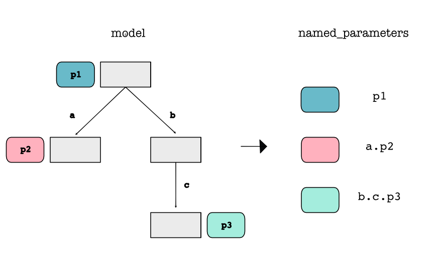
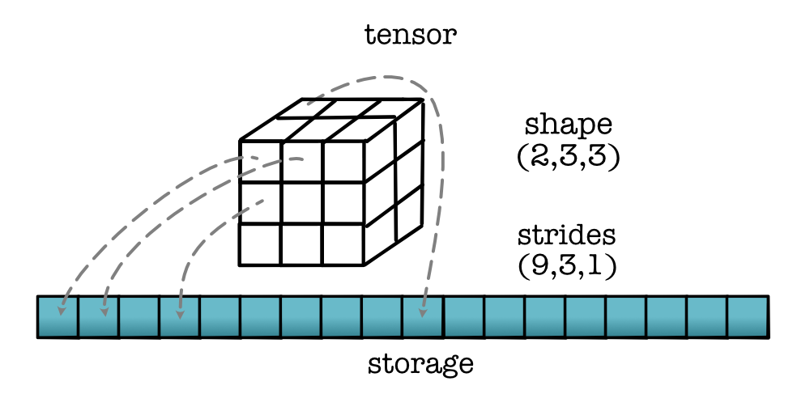

Machine Learning Engineering
Lecture 27
What's Next
Lecture
Outline
Review: Course
What's to Come
Review
Class Focus
Machine Learning Engineering
Machine Learning Engineering
Focus: software engineering behind machine learning
MLE
Systems course disguised as ML
Algorithms implemented Fast
Testing / Debugging / Scaling
Module 0 - Foundations
Module 0 - Foundations
Testing
Higher-Order Functions
Data Structures
Module 1 - Auto-Diff

Module 1 - Auto-Diff
Variables
Autodifferentiation
ML Basics
Module 2 - Tensors
Module 2 - Tensors
Multidimensional Arrays
Map / Zip / Reduce
Broadcasting
Module 3 - Effiency

Module 3 - Effiency
JIT / Types
Parallel
CUDA / Shared Memory
Module 4 - Networks

Module 4 - Networks
Convolutions
Tiling
Softmax
What do you know?
How neural networks works...
How autodifferentiation works...
How it all scales ...
What did you learn?
Systems are made by humans
Debugging, testing, organization
Filing bugs and asking questions
Piazza

Ge Gao - 505 contributions!
Course Reviews
What's Next
Many Forks
ML Engineering
ML Systems
ML Models
ML Engineering
Many questions beyond training
Data sets and data availability
Data collection / preprocessing / robustness
Tools of the Trade : Arrow
Tools of the Trade : ONNX

ML Systems
Many languages beyond torch
Different Tensor access forms
Tools of the Trade: Jax
Introduces vector map in addition to broadcasting
Can apply a function to a tensor across an entire dimension.
Code
vmap(model.forward, x)Tools of the Trade: Julia
Programming language for mathematical code
Pluto -> https://mybinder.org/v2/gh/fonsp/pluto-on-binder/master?urlpath=pluto
ML Models
Modern models are complicated, but made up of the parts we have seen
Many are open source and available to play with.
My Bet
You can read models!
Future Context: Self-Driving
Vision Models
Future Context: Code Gen
NLP Models
Protein Folding

'/home/srush/Downloads/carbon (18).png' '/home/srush/Downloads/carbon (18).png 'githu
Protein Folding
Distance Prediction
https://github.com/Urinx/alphafold_pytorch/blob/master/network.py
Tips of the Trade
Fancy models are not always necessary
Build something robust and fast on your hardware.
Develop multiple expertise to be flexible to users